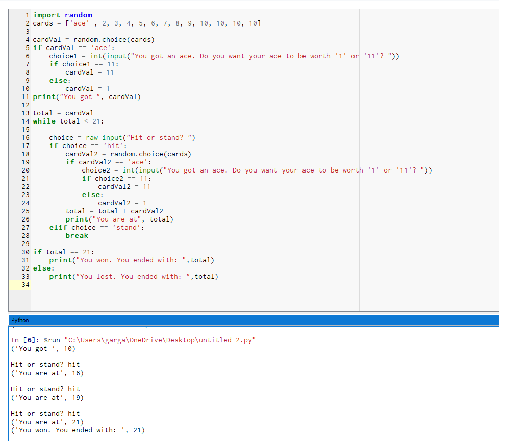
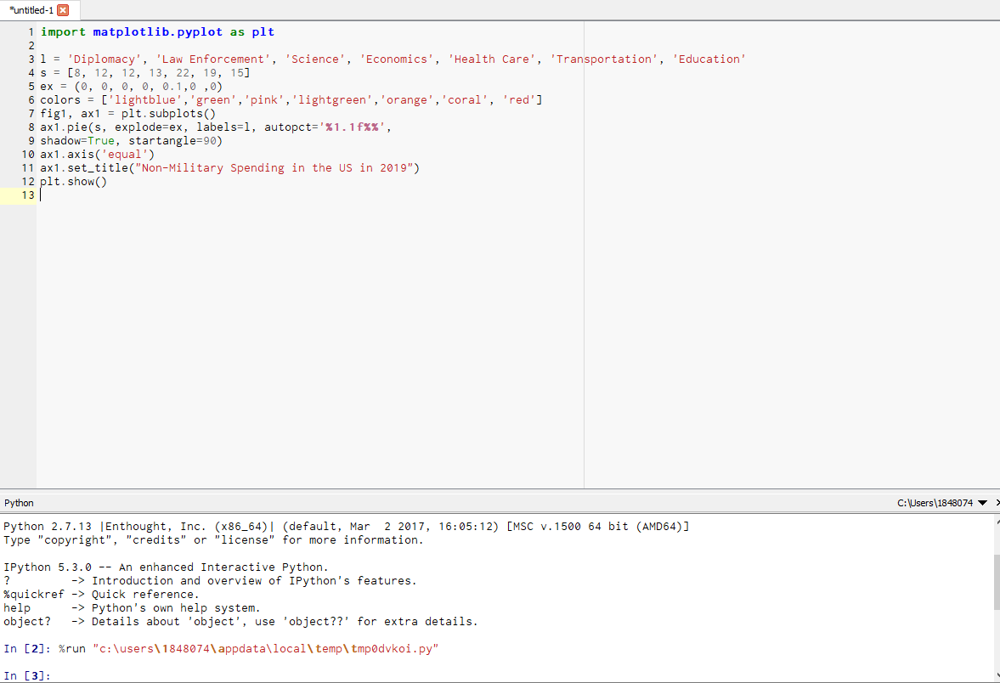
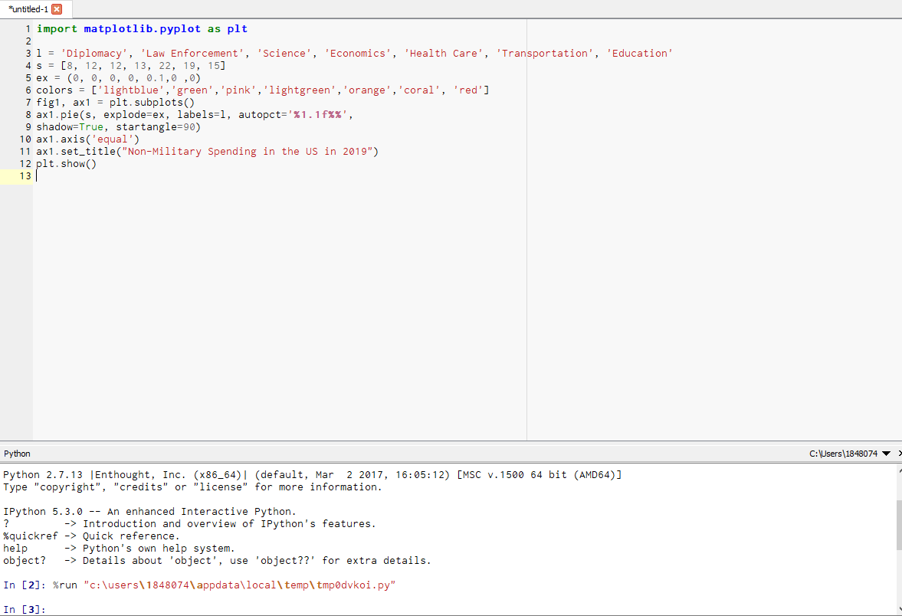

Portfolio:
This is my project for MIT App Inventor. For this project, my partner and I decided
to create a password generator that would randomly generate a password using numbers, letters,
and special characters (such as @,#, and &.)

In this project we used Scratch to program a diver to avoid obstacles such as a falling rock. You can move him using arrow keys.
This is the interactive fiction game we made using Python.
In this project, I programmed a Blackjack game, where the objective is to get to 21 points.

For this project, we manipulated a picture of a dog to change its color. The photo on the bottom right is the original, and the photos around it are modififed.
 This is the code:
This is the code:
 This is the pie chart project we programmed in python. We used 2019 US non-military spending for the data in this project, data credited to the Center on Budget and Policy Priorities. We chose this data to see where the US budget, excluding the military budget, went. We decided to exclude the military budget because it would make the other portions of the budget hard to read, due to the large majority of the budget it is. We chose a pie chart because it shows good proportions, which is useful in visualizing majorities. This representation where the majority of the US budget goes, by showing the larger slice.
This is the pie chart project we programmed in python. We used 2019 US non-military spending for the data in this project, data credited to the Center on Budget and Policy Priorities. We chose this data to see where the US budget, excluding the military budget, went. We decided to exclude the military budget because it would make the other portions of the budget hard to read, due to the large majority of the budget it is. We chose a pie chart because it shows good proportions, which is useful in visualizing majorities. This representation where the majority of the US budget goes, by showing the larger slice.
 The code:

For this project, we used NetLogo to modify a simulation about birth rates. We began by changing the icons of the two populations so that they represented turtles. Additionally, we modified the size of the screen displaying the growth of each population. The most important modification we made, however, was to the starting values of each population, so that one had a greater population than the other. By adjusting the fertility of each population, we learned that if the species with a lower initial population had a higher fertilty, even if it was only by 0.1, it would always survive the longest.
This is the original simulation model.
The code:

For this project, we used NetLogo to modify a simulation about birth rates. We began by changing the icons of the two populations so that they represented turtles. Additionally, we modified the size of the screen displaying the growth of each population. The most important modification we made, however, was to the starting values of each population, so that one had a greater population than the other. By adjusting the fertility of each population, we learned that if the species with a lower initial population had a higher fertilty, even if it was only by 0.1, it would always survive the longest.
This is the original simulation model.
 This is the modified simulation model:
This is the modified simulation model: